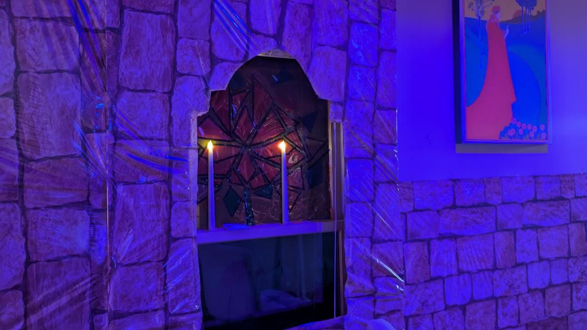
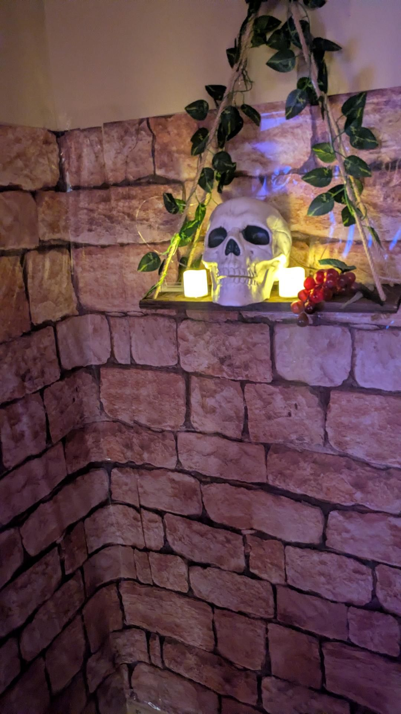
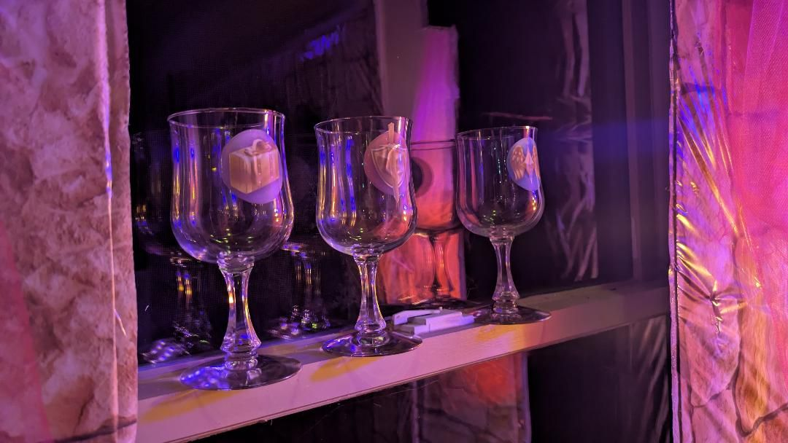
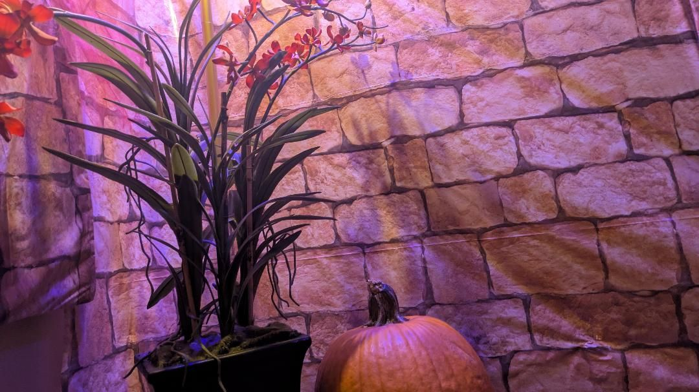
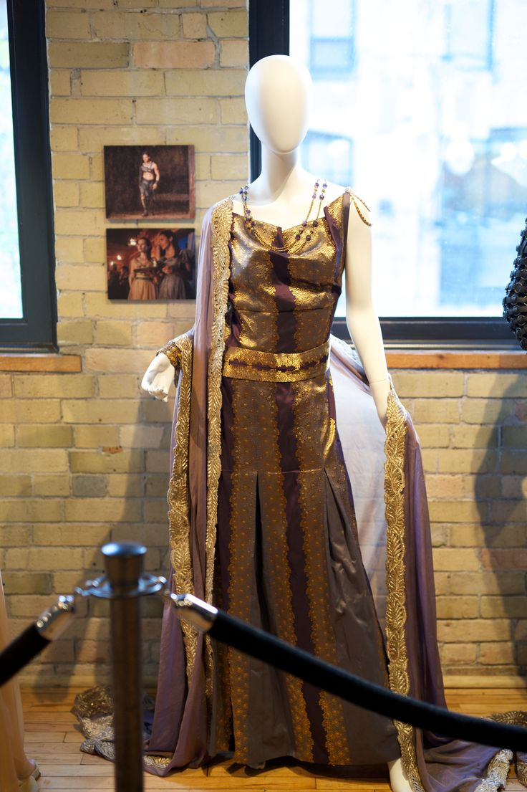
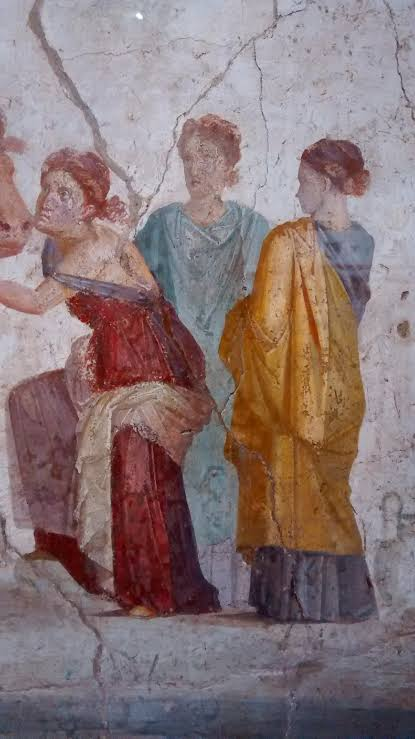
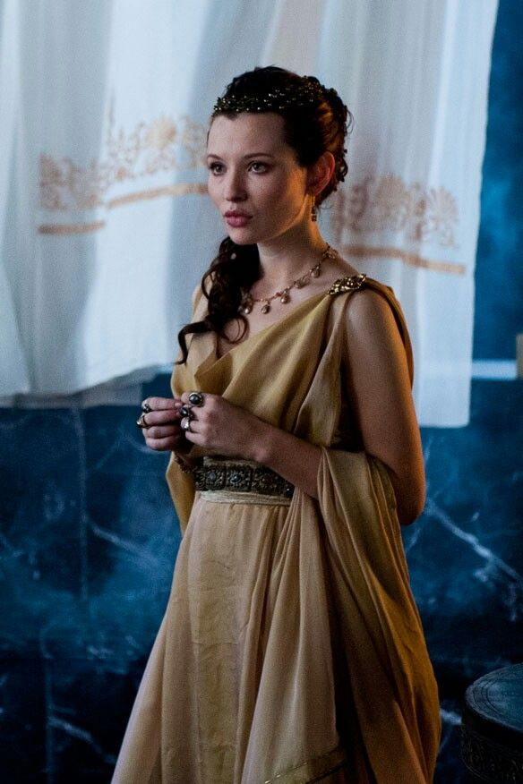
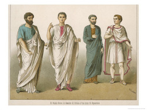
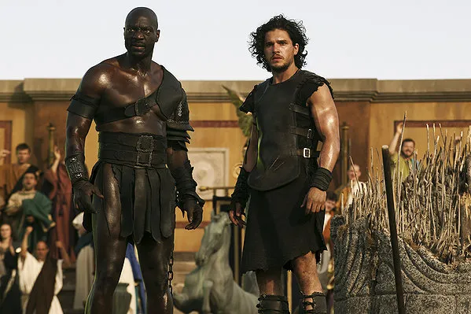

FRIENDSGIVING · AROUND THE WORLD EDITION
Friendsgiving-
Around the World
edition! Civ 6
Civilization VI, an international potluck, and an optional Pompeii costume theme.




EVENT
Sign up
for the party
Use the tabs to register, review Civilization VI resources, or view the optional costume theme. Sign-ups are shared across devices.
Connecting to shared sign-ups…
CIVILIZATION VI
Player registration
TEAM ASSIGNMENTS
Player
teams
Players requesting a team are paired with players who have a setup and are open to teammates. Use the menus to switch team assignments.
Player registrations will appear here.
Sign-ups are shared with guests on all devices. Each guest can update or remove their own registrations.
POTLUCK
Potluck registration
Dishes from around the world are encouraged. Select one category below. Counts include shared sign-ups.
No potluck registrations yet.
POTLUCK SIGN-UPS
Who is bringing what
Potluck sign-ups will appear here.
This list is shared with guests on every device.
CIVILIZATION VI RESOURCES
Beginner guides and links
Civilization VI is a turn-based strategy game. These links cover game rules, purchasing, and beginner instructions.
No discount code is listed because a reliable current code was not available. Check Steam and the price comparison page for current sale prices.
OPTIONAL COSTUME THEME
Pompeii-inspired clothing
Costumes are optional. Suggested colors include burgundy, muted pink, cream, and terracotta. A tunic, draped shawl, simple belt, or gold-colored accessory can reference ancient Roman clothing.
Roman clothing included tunics and draped garments. The Royal Ontario Museum provides an overview of toga and stola styles. Royal Ontario Museum: Roman dress ↗





CLOTHING AND ACCESSORIES
Amazon search links
Search results are sorted by price. Listing prices and availability vary.
DIY TUTORIALS
Costume instructions
Use a bedsheet or inexpensive fabric for a draped costume. Tutorials also cover wreaths and no-sew tunics.
Pompeii Online: ancient fashion ↗